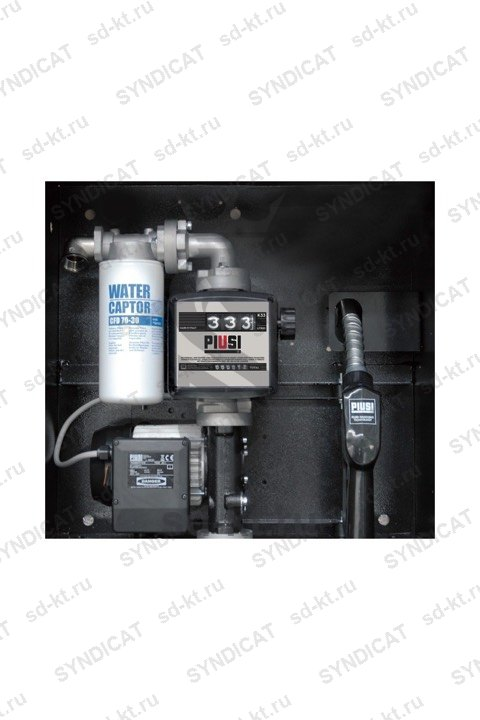

Раздаточный модуль для ДТ Piusi ST Panther 56 K33 BOX
PIUSI (Италия)
Раздел: Мобильные заправочные модули · АЗС
| Наличие счетчика | Механический |
| Питание насоса | 220 |
| Скорость выдачи топлива | 50 |
| Тип жидкости | Дизель |
Цена и наличие — по запросу. Поставляем оригинал и аналоги. Доставка по России.
Описание
Раздаточный модуль для ДТ Piusi ST Panther 56 K33 BOX производства PIUSI (Италия) — позиция из раздела «Мобильные заправочные модули» для АЗС. Компания SYNDICAT поставляет оборудование и комплектующие для автозаправочных и газозаправочных станций по всей России. Цена и наличие «Раздаточный модуль для ДТ Piusi ST Panther 56 K33 BOX» — по запросу: оставьте заявку или позвоните, подберём оригинал или аналог и рассчитаем доставку.